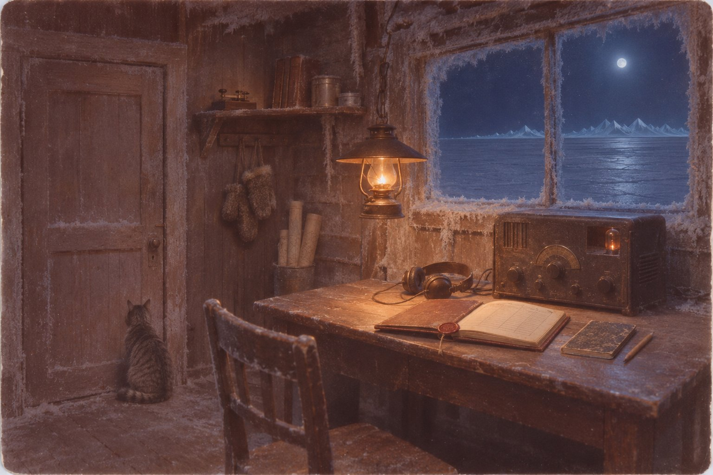

Как меня слышите

*Остров Врангеля, бухта Роджерса. 13 августа 1937 года*
Тетрадь мне дал Бурцев, начальник станции. Он сказал, что зимовка длинная, что в первую зиму пишут все, а во вторую уже никто, и что писать всё-таки лучше, чем разговаривать с собаками. Аппаратный журнал у меня и так есть. Он лежит слева от приёмника, прошнурованный, с сургучной печатью на последней странице, и в него идут время, волна, позывной, слышимость, текст и моя подпись. Журнал пишется для Москвы. Тетрадь будет для меня, и если что-нибудь в журнал не поместится, пусть ложится сюда.
Сегодня в журнал поместилось всё.
Вчера вечером по Москве, у нас в это время была уже глубокая ночь на тринадцатое, со Щёлковского аэродрома под Москвой ушёл через полюс на Америку Леваневский. Шесть человек экипажа, четырёхмоторный самолёт «СССР Н-209», позывной РЛ. Неделю назад всем станциям Главсевморпути на востоке пришёл приказ: слушать его волны, всё принятое записывать и передавать дальше. Нам прислали таблицу его цифрового кода, четыре листа, и Бурцев положил их под стекло на моём столе, справа от ключа, чтобы я не искал.
Первую радиограмму я принял в восемь пятьдесят три утра по-нашему, у них в Москве было без семи двенадцать ночи: «В 23 часа 39 минут прошли остров Моржовец. Галковский, Левченко». Слышимость два балла. Слышимость мы ставим по пятибалльной: единица — это когда ловишь каждую точку, прижав наушники ладонями, а пятёрка — будто передают из соседней комнаты. Моржовец — это в Белом море, в самом горле, они ещё только выходили из дому.
У каждого радиста на ключе свой почерк, как у человека пером. Одни ставят точки тяжело, будто гвозди забивают, другие тянут тире, третьи торопятся и съедают паузы. Галковский работает чисто и немного быстрее, чем нужно. Тире у него короткие, а промежутки между группами ровные, как по линейке. Так работают радисты, которых ставят на парады и показывают начальству. За день я принял от него ещё три радиограммы и теперь, кажется, узнал бы его среди десяти.
Самого Леваневского я видел один раз. В тридцать шестом году, практикантом, я сидел на радиостанции в Уэлене, когда он с Левченко перегонял из Америки в Москву гидросамолёт «Валти» и сел у нас. Он сошёл на берег, пришёл в радиорубку и стоял за плечом у старшего, пока тот передавал его телеграмму в Москву, и не уходил, пока Москва не дала квитанцию, то есть не подтвердила, что приняла всё до последней буквы. На меня он ни разу не посмотрел. Я помню только его руки на краю стола и то, что он ждал квитанцию, не садясь, хотя ему подвинули табуретку. Тогда я уже знал, что в тридцать пятом году он развернул над Баренцевым морем самолёт, на котором летел в Америку, потому что из мотора пошло масло, и что многие в Москве говорили: зря, другой бы дошёл. Глядя, как он стоит над квитанцией, я думал, что не зря.
Сейчас, когда я пишу, у нас шесть вечера, а у них в Москве девять утра, и они подходят к полюсу. Бурцев велел мне лечь до десяти: Ляхов, наш метеоролог, посидит у приёмника. Я не лягу, конечно.
*14 августа*
Не спал. Пишу в одиннадцатом часу утра, руки до сих пор как чужие.
В десять сорок вечера по-нашему, в Москве было без двадцати два дня, Галковский передал, что прошли полюс. «Достался он нам трудно». Высота шесть тысяч, минус тридцать пять, встречный ветер под сто километров в час, сплошная облачность. Мы с Ляховым посмотрели друг на друга, и Ляхов сказал: «Ну всё, теперь под горку». Над полюсом у них поворот на меридиан Фэрбенкса, а дальше вниз, к Аляске, и выходило, что если всё пойдёт как надо, к утру мы услышим их уже над американским берегом.
Потом в наушниках пошёл голос. Я переключился на телефон и сначала ничего не разобрал, только треск, а потом голос, мужской, спокойный, говорил по-русски, и слова приходили через раз: «…шесть двести… правый крайний… снижаемся… входим в облачность… обледеневаем…» Голос был не испуганный. Он говорил так, как диктуют телеграмму, медленно, чтобы на том конце успели записать. Это говорил Галковский. Я никогда не слышал его голоса и всё равно знал, что это он, потому что паузы между словами у него были такие же, как между группами на ключе.
В одиннадцать тридцать две он перешёл на ключ, и я записал радиограмму номер девятнадцать: «Крайний правый мотор выбыл из строя из-за порчи маслопровода. Высота 4600. Идём в сплошной облачности. Ждите. Леваневский».
Я подчеркнул в журнале слово «маслопровода» и потом стёр подчёркивание, потому что в журнале ничего не подчёркивают. Бурцев стоял у меня за спиной, он прочитал через плечо и ничего не сказал. Высота у них упала с шести тысяч до четырёх шестисот, а самолёт был тяжёлый, с полными баками, и я подумал о льде на крыльях. Лёд нарастает на передней кромке, как сало на ноже, и самолёт перестаёт держаться за воздух.
В одиннадцать сорок девять — ещё одна, коротко, с цифрами в конце: высота три шестьсот, идут на трёх моторах, в сплошных облаках, и потом группа «48 3400 92». Я нашёл в таблице сорок восемь: «будем садиться». Ни три тысячи четыреста, ни девяносто два в таблице не было. Бурцев сказал, что это, может быть, время, а может быть, место, и что штурман Левченко знает, а мы нет. Первую цифру во второй группе я принял как тройку, но в ту секунду в эфире щёлкнуло, и это могла быть четвёрка. Так я и записал в журнале: «3400 (первая цифра нечётко)».
Потом был час, когда не было ничего. Мы сидели втроём, пришёл ещё моторист Сушко, хотя его никто не звал, и курил у двери. Без двух минут час ночи, совсем слабо, на единицу, я поймал: всё в порядке. Больше ничего, только это и позывной.
Бурцев сказал: «Сели». Сушко плюнул через плечо. Мы пили чай, и Ляхов рассказывал, что на льду под полюсом можно сидеть хоть месяц, Папанин же сидит, а у этих шестерых на борту продуктов на полтора месяца и палатка, и что американцы с Аляски найдут их раньше наших. Я слушал его и не снимал наушников с шеи.
В два пятьдесят три Галковский позвал: «Как меня слышите? РЛ. Ждите». «Как меня слышите» — это первое, о чём спрашивает радист, когда не уверен, что до кого-нибудь достаёт. Бурцев кивнул, и я ответил. Мы не имели права работать с самолётом, нам велели только слушать, но он разрешил. Я отстучал ему, что слышу на единицу и жду. Ответа не было. Я позвал ещё раз, и ещё, до четырёх утра. Ответа не было.
В семь утра я сидел один, Бурцев ушёл спать, Ляхов ушёл на площадку снимать срок, то есть записывать показания приборов в положенный час, и тут на волне сорок два с половиной метра заработал РЛ. Слышимость была на двойку, лучше, чем ночью. Я записал: «Идём на трёх, снизились, вижу ледяные горы».
Я сидел и смотрел на эту строчку. В час ночи они передали, что всё в порядке, в три спрашивали, слышим ли мы их, и было ясно, что они на льду. Человек, который сидит на льду, не пишет «идём на трёх». Так пишут в воздухе. Я подумал, что это, наверное, старая радиограмма, которую Галковский набил на ключе ещё до посадки и которую тогда никто не принял, а теперь он повторяет её для порядка, чтобы она легла в журнал. Так иногда делают.
Только почерк был не такой. Это был его почерк, те же короткие тире, те же ровные паузы, но слишком ровные. Ночью, после посадки, руки у него уже были холодные, и в «как меня слышите» он дважды сбился, а тут не сбился ни разу. Как будто кто-то положил его ночную передачу на стекло, подсветил снизу лампой и обвёл.
В семь сорок пришла вторая, на той же волне: «Иду на двух, пришлось снизиться, впереди вижу ледяные горы».
Я долго не мог понять, что меня в ней держит, а потом понял: слово «иду». За эти сутки у меня в журнале набралось от них больше десятка радиограмм, и ни в одной не было «я». Прошли, идём, снизились, ждите. Подписывались они то вдвоём, то втроём, а если ставили одну фамилию, то командира, за всех. Они шестеро в одной машине и думают про себя во множественном числе, так всегда бывает в экипаже, у нас на станции, и то говорят «у нас пурга», «мы снимаем срок». А это «иду» было одно.
На двух. Мотор у них отказал один, ночью они шли на трёх. Посреди полярного моря, там, где они шли, ледяных гор нет. Там торосы, которые ветер сгоняет в гряды высотой с дом, там бывают трещины и разводья, но гор там нет, это я знаю из курсов, и Ляхов знает, и все знают.
Бурцев встал в девять, прочитал обе и велел записать в журнал как принято, а не как правильно. Я записал. Обе ушли на мыс Шмидта в десять ноль пять.
*15 августа*
Вчера в девять двадцать пять вечера по-нашему на волне двадцать шесть с половиной метров, очень слабо, на самом краю, РЛ передал цифру восемьдесят три. Три раза подряд, потом знак АС. АС — это у радистов «ждите»: точка, тире и три точки, слитно, одним знаком.
Восемьдесят три — это широта. Штурман Левченко сказал нам, где они. Это они, это я знаю точно, и знаю потому, что это было плохо. Точки у Галковского плыли, одну тройку он начал заново, между второй и третьей восьмёркой была пауза в полвздоха, как будто он отнимал руку от ключа и дышал на пальцы. Так работает живой человек, которому холодно. Я записал в тетради, а не в журнале: это последний раз, когда я слышал их самих.
Сегодня в семь пятнадцать утра на той же волне двадцать шесть с половиной было вот что. Я записываю здесь целиком, потому что в журнал это не легло, в журнал я написал: «Передача на иностранном языке, текст латиницей, разобрать не удалось».
ETIDZH ETIDZH YROG EYNYADEL ETIDZH ETIDZH YROG EYNYADEL
Почерк был тот же, ровный, обведённый.
Бурцев сказал, что Галковский английского не знает и, когда передаёт американцам, пишет русские слова латинскими буквами, это все знают, и что, значит, это для Аляски. Я сказал, что это не русские слова. Тогда Ляхов взял мою запись, ушёл с ней к своему зеркалу для бритья, вернулся, сел и долго молчал, а потом прочитал вслух задом наперёд.
Ждите. Ждите. Горы ледяные.
Бурцев сказал: «Помехи», — забрал у Ляхова листок и унёс к себе. Ляхов потом сказал мне в бане, что Бурцев листок не выбросил, а положил в ящик, где у него лежат документы на станцию.
Я думаю об этом весь день. Человек, который хочет, чтобы его поняли, не пишет слова задом наперёд. Задом наперёд пишет тот, кто взял чужие слова и вертит их в руках, как ребёнок вертит часы, чтобы посмотреть, что у них сзади.
*19 августа*
Ищут. Из Москвы передают, что с острова Рудольфа готовят тяжёлые самолёты, что американцы и канадцы вылетают с Аляски, что ледоколы идут. Нам велено слушать три раза в сутки по часу на всех волнах РЛ. Я слушаю больше. Бурцев знает и молчит.
Ничего. Пустой эфир. Шмидт, Анадырь, Тикси, американские станции Барроу и Ном, японские рыбаки где-то у Курил, своя обычная болтовня, а на волнах РЛ ничего.
Сегодня заходил старый Кивак, охотник из эскимосского посёлка, пришёл за патронами и долго сидел у печки. Его семья живёт на острове с самого основания станции, их привезли сюда с материка ещё при Ушакове. Он спросил, правда ли, что пропал большой самолёт. Я сказал, что правда. Он спросил, где. Я показал на карте на стене: вот наш остров, а вот, тысяча с лишним вёрст на север, восемьдесят третья широта. Кивак смотрел на карту и молчал, а потом сказал, что туда никто не ходит, ни на собаках, ни на байдаре, потому что там нет земли, и надел шапку.
*23 сентября*
Вчера ночью опять был РЛ. Сначала на сорока восьми метрах, потом на пятидесяти пяти, только позывной, много раз. Слышимость единица. Сегодня ночью снова. Передал на Шмидт.
Прошло сорок дней. Запасная рация на таком самолёте маленькая, слабая, работает от аккумулятора через умформер. Умформер — это такая машинка, которая делает из низкого напряжения аккумулятора высокое для ламп. Аккумулятор на морозе садится за несколько суток. Его можно заряжать от мотора, если мотор запустить, но для этого нужен бензин, а бензин им нужен, чтобы греться и топить снег. Если бы они грели аккумулятор за пазухой, как греют руки, он прожил бы, может, неделю. Сорок дней он не проживёт ни за пазухой, ни где-нибудь ещё.
И почерк ровный. Сорок дней на льду на восемьдесят третьей широте, а почерк ровнее, чем у Галковского в первую ночь над Белым морем.
Сегодня ночью между позывными РЛ один раз передал августовскую группу из той радиограммы, где «будем садиться»: «48 4400 92». В августе я принял её с тройкой и сомневался, теперь в ней стояла четвёрка, чистая, без треска. Через час он передал её снова, с тройкой. Я думаю, что и в августе разные станции слышали его по-разному, потому что и тогда он передавал по-разному. Человек, который передаёт своё место, повторяет цифры одинаково, иначе зачем их передавать. Так повторяет тот, кому всё равно, что значат цифры, лишь бы было похоже.
*1 октября*
Вчера в девять вечера по-нашему на пятидесяти четырёх метрах, на единицу: SOS, SOS, SOS. Потом, через полчаса: «лат 83 норд лонг 179 вест РЛ». Широта восемьдесят три северная, долгота сто семьдесят девять западная.
Сегодня утром Шмидт передал по кругу, что теплоход «Батум», который стоит у Курильских островов, за три с лишним тысячи вёрст от нас, принял то же самое, той же ночью и на той же волне. Значит, не мне одному. Это я записываю для себя, чтобы помнить, что я не сошёл с ума.
Широту они дали сами, ещё в августе: восемьдесят три. Долготы они не давали ни разу. Штурману, который седьмую неделю сидит на льду без солнца и без звёзд, потому что осенью над льдом всё время туман, долготы не взять, нечем. А тут долгота есть, и точная.
Я встал и посмотрел на карту. Наша станция стоит на ста семидесяти восьми с половиной градусах западной. Если от нашей мачты провести линию прямо на север, через пролив и через весь лёд, она упрётся в восемьдесят третью широту на сто семьдесят девятом меридиане. Это не случайное место. Это наше место, только на тысячу триста вёрст севернее.
Бурцев посмотрел на карту вместе со мной. Он зимует пятую зиму, он читал книги, которых тут, кроме него, никто не читал. Он сказал, что где-то там, немного севернее и восточнее, есть место, которое на Западе называют полюсом недоступности. Это точка, от которой до любой земли, в какую сторону ни пойди, дальше всего. Никто там не был. Австралиец Уилкинс в двадцать седьмом году пытался туда долететь и не долетел.
— Дальше всего от земли, — повторил Бурцев и отошёл от карты.
*5 октября*
Пришёл ответ из Москвы, через Шмидт, на все мои передачи разом. Непроверенные сведения в эфир не давать. Прослушивание вести по графику. Исполнение подтвердить.
Я подтвердил.
Вечером Бурцев позвал меня к себе, закрыл дверь и налил по полстакана. Он сказал, что я молодой и не понимаю, какой сейчас год. Что в Ленинграде, в институте, берут людей, с которыми он зимовал, и что про них в газете не пишут, их просто нет. Что за паникёрство, за слухи, за распространение вражеских передач людей тоже нет. Что радиограмма о ледяных горах, которую принял не только я, но и Якутск, в московские сообщения не вошла, и что, значит, наверху решили, что её не было. И что если я буду каждую ночь посылать на Шмидт, будто мёртвый самолёт передаёт мне слова задом наперёд, то в конце концов кто-нибудь на Шмидте спросит, почему врангелевский радист так старается, и это будет плохой вопрос для меня, для него и для всей станции.
— Пиши в журнал: сигналы РЛ слабые, текст не разобран, — сказал он. — А что разобрал, пиши в тетрадку. Тетрадку я тебе для этого и дал.
Я спросил, верит ли он мне. Он сказал, что верит, и что поэтому и говорит со мной при закрытой двери.
*28 октября*
Солнце ходит низко, над самыми горами на юге, и с каждым днём короче. Бухта стала, лёд в проливе сомкнулся. Ляхов говорит, что в последних числах ноября солнце уйдёт совсем и до конца января не покажется.
По графику я слушаю РЛ час утром и час вечером. Ночью сижу сверх графика, Бурцев не мешает. Каждую ночь в начале часа я зову: «РЛ, РЛ, я — наш позывной, как меня слышите, отвечайте». Зову три раза, потом слушаю. Я понимаю, что их нет. Я зову, потому что если хоть один из шестерых сидит там на ящике возле рации и стучит замёрзшими пальцами, пусть знает, что его зовут.
РЛ отвечает не каждую ночь, а через две на третью. Позывной, иногда «как меня слышите», иногда «ждите». Почерк ровный. Слышимость в сентябре была единица, теперь твёрдая единица, иногда полтора.
На станции у нас есть кошка, Мурка, её привезли прошлым летом на пароходе. Ночами она обычно спит у меня в радиорубке, на тёплом кожухе выпрямителя. Теперь, когда работает РЛ, она встаёт, спрыгивает и садится у двери, спиной ко мне, и сидит, пока я не сниму наушники. Утром снова приходит спать на кожух.
*24 ноября*
Солнце ушло позавчера. Теперь в полдень на юге над горами светлеет на час, как перед рассветом, который не наступает, и снова темно. Луна.
Ищут теперь и ночью, при луне, это передавали по радио: Уилкинс, тот самый, что летал к полюсу недоступности, летает теперь с канадской стороны на самолёте с лыжами и ищет Леваневского по лунному свету. Так зимой в Арктике ещё никто не летал.
Вчера в третьем часу ночи я поймал американский самолёт. Он шёл где-то над льдом далеко на востоке и звал по-английски. Английского я знаю немного, со школы и с Уэлена, где к нам заходили американские шхуны, но тут знать было нечего, он говорил одно слово, фамилию, раз за разом, по слогам, раскатывая её на американский лад: Ле-ва-нев-ски. Ле-ва-нев-ски. Звал минут десять, потом сказал что-то ещё и замолчал.
Через минуту на сорока восьми метрах, где сидит РЛ, телефоном, голосом, я услышал то же самое. Ле-ва-нев-ски. Ле-ва-нев-ски. Та же раскатка, те же паузы, тот же подъём голоса на последнем слоге. Только голос был не американский и не русский. Как будто кто-то повторял звуки, не зная, что это слова. Как повторяет попугай, только попугай повторяет того, кто рядом, а этот американец был за полторы тысячи вёрст отсюда.
Слышимость была два балла.
Я снял наушники и долго сидел. Мурка сидела у двери.
Оно тоже зовёт Леваневского. Я впервые написал «оно». Пусть остаётся.
*19 декабря*
Сегодня в полдень, в сумерках, Сушко пришёл с собачьей площадки белый и сказал, чтобы я вышел. Я вышел. Было тихо, ни ветра, ни позёмки, минус тридцать восемь, и с севера, со льда, где на тысячу вёрст нет ни берега, ни людей, шёл гул. Ровный, низкий, то сильнее, то слабее, как будто далеко над льдом идёт тяжёлый самолёт с несколькими моторами. Мы стояли и слушали, все, кто был на станции, и Кивак со своими. Собаки выли, все до одной, и никто их не унимал.
В декабре над этим льдом не летает никто. Уилкинс ищет далеко на востоке, у Канады, а наши ждут весны. Над нами нет ни одного самолёта, и неба над нами тоже нет, есть темнота и звёзды.
Гул продолжался минут двадцать, потом стал тише и пропал. Кивак всё это время стоял к северу лицом, не двигаясь, а когда гул пропал, ушёл к себе, ни с кем не заговорив. Ляхов сказал, что это лёд. Лёд в проливе и правда гудит, когда его давит, это мы слышали и в октябре, но тогда он трещал, стрелял, скрипел, а не тянул одну ноту двадцать минут.
Вечером я слушал американскую станцию на мысе Барроу. Американцы передавали своим, что эскимосы на их берегу, у Аляски, в тот самый день, тринадцатого августа, будто бы слышали шум моторов над морем. Самолёта никто не видел, только шум. Американцы считают, что это был Леваневский, что он прошёл над их берегом и упал где-то рядом, и собираются искать там.
Тринадцатого августа Леваневский был на восемьдесят третьей широте. Над Аляской в тот день пролетел только звук. Оно услышало моторы в первый же день, а сегодня показало, что запомнило.
*1 января 1938 года*
Новый год встретили. Бурцев сказал речь, Сушко играл на гармони, Ляхов напился и плакал, что у него в Ленинграде жена, а он здесь. Фельдшер унёс его спать. Кивак принёс мороженой нерпы, и её ели строганиной с солью.
Мне пришла частная радиограмма с материка, через Анадырь и Шмидт, мне её передали в самый Новый год, в полночь, и я принимал её сам, свою собственную: «Алёшенька поздравляем новым годом ждём живого здорового целуем мама Таня». Таня — это сестра. Я переписал радиограмму на отдельный листок, без журнальных отметок, и положил в карман гимнастёрки, где у меня комсомольский билет.
*8 января*
В три часа ночи, на пятидесяти пяти метрах, РЛ: «Тимохину Алёшенька поздравляем новым годом ждём живого здорового целуем мама Таня».
Моя фамилия, моё имя, как пишет мама, без единой ошибки. Только «Тимохину» в начале, как пишут на почте в графе адресата. Оно передало мою телеграмму мне, как будто я сам был где-то там и мне надо было её доставить.
Слышимость три балла.
Я не позвал его в ту ночь. Сидел с наушниками на шее и не звал.
*26 января*
Солнце вернулось. Позавчера в полдень над южными горами показался его край, красный, сплющенный, на минуту, и мы все выбежали смотреть, даже Мурка вышла на крыльцо.
На севере в эти полуденные сумерки видна гряда. Её не было в октябре. Над льдом, на самом горизонте, стоят белые горы, острые, с синими тенями, как Кавказ на открытках. Ляхов говорит, что это рефракция: воздух над холодным льдом работает как линза, поднимает и вытягивает то, что лежит за горизонтом, и обычные торосы кажутся хребтом. Это правда, рефракция бывает, я её видел на курсах на картинках. Но рефракция каждый день разная, а гряда стоит одинаковая, только с каждой неделей немного выше.
Кивак этой зимой не ходит на север. Каждую зиму эскимосы ходят на собаках к кромке, где припай кончается, бить нерпу у разводьев. Припай — это лёд, который примёрз к берегу и стоит неподвижно всю зиму, а за ним уже лёд плавучий, живой. В этом году Кивак ходит только на запад, вдоль берега. Я спросил его, почему. Он сказал, что собаки не идут.
*11 февраля*
Неделю назад я узнал свой почерк.
У меня с курсов есть дурная привычка. Перед знаком конца передачи я ставлю лишнюю точку, одну, как будто запинаюсь перед тем, как закончить. Наш преподаватель в Ленинграде, старый флотский радист, бил меня за это линейкой по пальцам и говорил, что по этой точке меня опознает любой немецкий пеленгатор. Я так и не отвык. Ещё я немного тяну тире, особенно в цифрах, когда устаю.
Пятого февраля в четвёртом часу ночи на пятидесяти пяти метрах РЛ передавал позывной и «как меня слышите», и тире в цифрах были длинные, и перед знаком конца стояла лишняя точка. С тех пор каждый раз. Галковского в его передачах больше нет. Оно передаёт моей рукой.
Я подумал, что так и есть: оно учится у того, кто говорит с ним больше всех. Всю зиму с ним больше всех говорил я.
Слышимость четыре балла.
*20 февраля*
По радио передали, что вчера папанинцев сняли со льдины. Их унесло за зиму через всё полярное море к Гренландии, и к ним подошли два ледокола. Все живы. Бурцев сказал речь, хотя был будний день, и даже Ляхов кричал «ура».
Я радовался вместе со всеми, честно. Потом пошёл в рубку и думал, что папанинцы девять месяцев каждый день передавали с полюса, и каждый день их слушала вся страна, и с ними ничего не случилось. Их льдина ушла в другую сторону, в Атлантику, далеко от сто семьдесят девятого меридиана. Их унесло от него, а не к нему.
*5 марта*
Пишу днём, при солнце. Ночью писать не смог.
В третьем часу ночи, на пятидесяти пяти метрах, слышимость пять баллов. Пять баллов — это как будто ключ стоит у меня за стенкой, в кладовой, где лежат собачьи нарты и мешки с углём. Наушники звенели, мне пришлось убавить громкость, чего с РЛ не бывало ни разу.
«Тимохин Тимохин как меня слышите иду ждите иду ждите».
Моей рукой, с моими длинными тире, с моей лишней точкой перед концом.
Я сидел до утра, не снимая наушников, но больше оно ничего не передало. Утром, когда рассвело, я поднялся на сопку за станцией с биноклем Бурцева. Гряда на севере стояла ближе, чем в январе, намного ближе, с бинокля видны были отдельные вершины, синие, гладкие, как обсосанный сахар. Стояли они там, где кончается припай. Ближе к берегу их не было.
Днём я сидел над журналом и тетрадью и перечитал всё с самого августа, и понял то, что должен был понять ещё осенью.
Оно никогда не начинало первым. Ни разу. В августе оно повторило ледяные горы, которые экипаж передавал в воздухе, и «ждите» Галковского. В ноябре оно позвало Леваневского через минуту после американца. В январе передало мне мамину телеграмму, которую само услышало, пока она шла ко мне через Шмидт. И всю зиму, каждую ночь, в начале часа, я звал его сам: «РЛ, РЛ, как меня слышите, отвечайте». Оно отвечало через две ночи на третью, а потом каждую ночь. Я думал, что слушаю его, а оно всё это время слушало меня. Оно не спрашивает «как меня слышите». Оно не знает, что это вопрос. Оно отвечает тем, что ему дали, и учится. Его звала вся страна, звали американцы, звала Москва, каждую ночь звал я, и чем больше его звали, тем громче оно отвечало и тем ближе подходило.
В сентябре я написал: «так повторяет тот, кому всё равно». Надо было писать «то».
Я пошёл к Бурцеву и рассказал ему всё. Он слушал, не перебивая, а потом спросил, что я предлагаю. Я сказал, что не буду больше звать. Он сказал, что это правильно.
*16 марта*
Я больше не зову.
Слышимость упала до трёх. Оно передаёт моей рукой позывной и «ждите», каждую ночь, в одно и то же время, в начале часа, как я его приучил. Я сижу и слушаю, потому что по графику положено слушать, но ключа не касаюсь. Ключ я отвернул от стола и положил на полку, чтобы рука не легла на него сама.
Вчера по радио сказали, что поиски самолёта Леваневского прекращаются. Уилкинс возвращается домой. Экипаж считается погибшим.
*2 апреля*
Слышимость единица. Неделю как оно больше не передаёт моей рукой, а передаёт тем ровным обведённым почерком, каким передавало в августе. Как будто забывает меня так же, как выучило, понемногу, с конца.
Эфир больше никто не зовёт. Никто не стучит в пустоту «РЛ, РЛ, отвечайте», ни американцы, ни Москва, ни я. И оно затихает.
Гряда на севере стоит на месте, но ниже. Ляхов говорит, что рефракция весной другая.
*21 апреля*
Двадцатый день тишины на всех волнах РЛ. Я записал в журнал: «Прослушивание по графику. Сигналов РЛ нет». Это правда.
Кивак вчера впервые за зиму ушёл с собаками на север, к кромке, бить нерпу. Вечером вернулся с двумя нерпами и сказал, что собаки шли хорошо.
Летом придёт пароход, и я уеду. Бурцев остаётся на шестую зиму. Он попросил оставить ему тетрадь, я не отдал. Он не настаивал.
Я много думаю о них. О шестерых, которые сели живыми на лёд на восемьдесят третьей широте и звали, как их научили звать: как меня слышите, ждите. О том, кто их там слушал. Ни про одного из них я не знаю, как он умер, и не хочу знать. Знаю только, что их голоса последний раз были их голосами четырнадцатого августа, в девять двадцать пять вечера по-нашему, когда Галковский передавал восемьдесят три и дышал на пальцы между цифрами. Всё, что было после, было уже не они. Пусть это будет записано хоть где-нибудь, раз в журнал этого записать нельзя.
*Сангар, Якутская АССР. 14 января 1981 года*
Сорок три года не открывал эту тетрадь. Открыл, потому что в январском номере «Вокруг света» напечатали письмо вертолётчика. Он пишет, что летом шестьдесят пятого года на берегу озера Себян-Кюэль, это в верховьях, в горах, далеко на северо-восток от нас, видел деревянную плиту с выжженной надписью: «Здесь 13 августа 1937 года в результате катастрофы самолёта Н-209 погиб экипаж», дальше фамилия Леваневского, другие уже не прочесть, одна кончается на «-ский». Теперь, наверное, станут искать Леваневского в Якутии.
Плиту выжег я.
После войны я двадцать с лишним лет проработал на шахте в Сангаре радистом, теперь на пенсии. Ночью приёмника не включал ни разу, только днём, по работе. Летом пятьдесят восьмого меня взяли с геологами в верховья, на связь, и я взял с собой доску, лиственничную, сухую, и старый медный паяльник, который можно греть на костре. Буквы таким паяльником выходят неровные, неглубокие, и за семь лет, к приезду вертолётчика, их уже съело дождём и солнцем. Шесть фамилий я выжигал два вечера. Кастанаев, Левченко, Годовиков, Побежимов, Галковский, Леваневский. Геологи думали, что я выжигаю памятник кому-то из своих, и не спрашивали.
У шестерых нет могилы, а у человека должна быть могила. Это первое.
Второе. Тот, кто будет читать эту тетрадь, пусть поймёт, почему я выбрал это место. Себян-Кюэль — это тайга и горы, и дальше от моря, чем туда, я в своей жизни забраться не мог. Если уж Леваневского искать, пусть ищут здесь. Здесь ничего нет. Здесь походят, покопают, пересыплют песок с берега и уедут домой. А туда, где они на самом деле, на восемьдесят третью широту, на сто семьдесят девятый меридиан, туда теперь можно долететь, туда летают и садятся на лёд. Только звать там нельзя. Там отвечают.
У соседского парня за стенкой есть транзистор, он ночью крутит его по всей шкале, ищет музыку. Когда треск на коротких, на сорока восьми, на пятидесяти пяти, я выхожу на крыльцо, хоть в мороз. Я не жду, что там что-нибудь будет. Там ничего не было сорок три года. Я выхожу потому, что знаю, отчего там тихо. Там тихо, потому что никто не зовёт.
Не зовите.
Тбилиси, ноябрь 2026